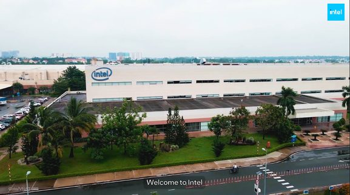
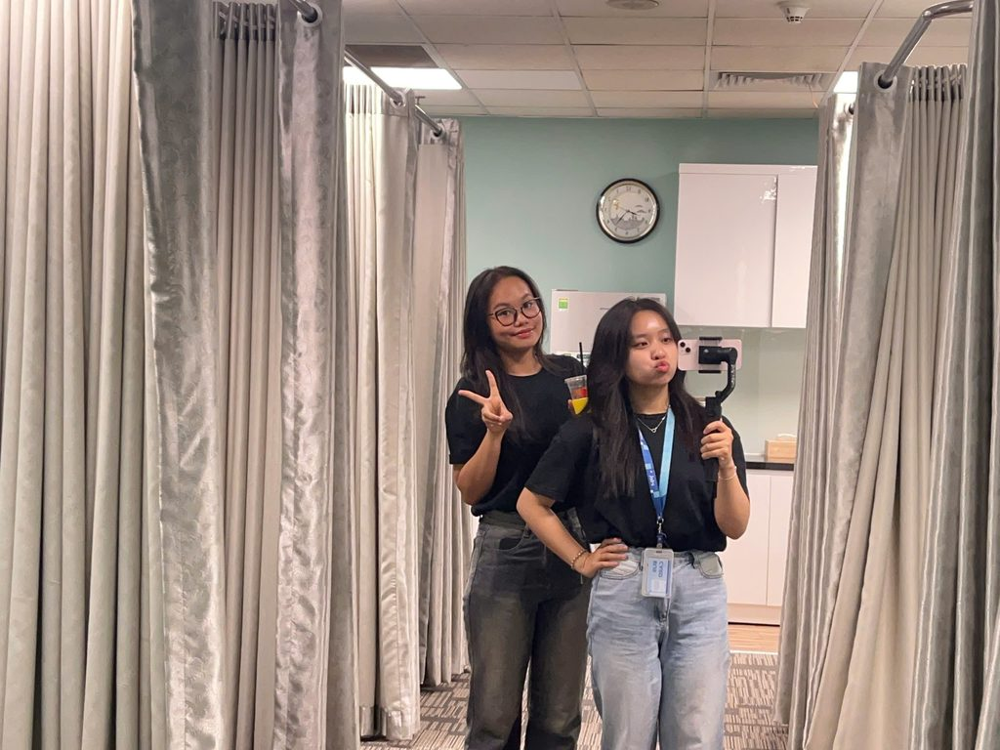
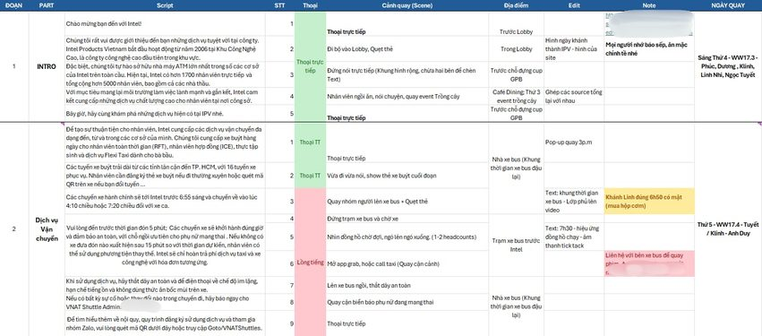
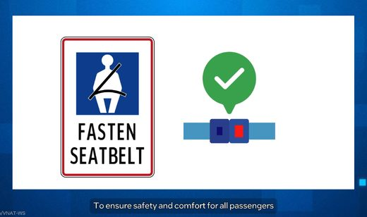

Overview
During my internship at Intel, I was given the chance to work on real projects. While updating materials for a new-hire onboarding session, I came up with the idea of a video that covers all the site services at Intel, so new employees could understand company processes faster. It saved the time that a usual onboarding session would take.
Project LeadScriptwriterFilmerActressEditor
How it went
SituationOnboarding ran as a 60-minute live session, which took time from both new hires and the HR team.
TaskCreate an in-house video that makes onboarding faster, with zero budget and a tight timeline.
ActionI proposed the idea, then wrote the script, planned the shots, filmed, acted in and edited the video myself with Canva and CapCut.
ResultA 5-minute video plus Q&A replaced the live session and cut onboarding time by about half. It is still used for new hires.
Results
60 → 5minutes: live session to video, plus Q&A
~50%less time spent on onboarding
0 VNDbudget, made fully in-house
Behind the video

images/intel-1.jpg
images/intel-2.jpg
images/intel-3.jpg
images/intel-4.jpg